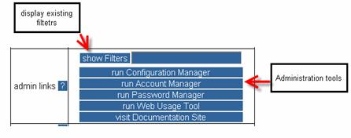

Admin links – provided only for operation personnel with administrator privileges. These links allow data files to be configured for special purposes, such as trend analysis.
Click on any of the buttons shown in the following figure to run the listed tools.

Figure 2.8 – Admin Links Button Segment
A brief description of each admin link is provided below.
· show Filters – Click on this button to display any currently active filters by default. Optionally, enter a date as required format (YYYY.MM.DD-hh:mm:ss) in this field to show filters active for specified date. Click/press Enter in field or click show Filters button.
· run Configuration Manager – Click on this tool button to modify and change inventory parameters in Visualizer.
· run Account Manager – Click on this tool button to assign/modify user privileges.
· run Password Manager – Click on this tool button to modify users’ passwords.
· run Web Usage Tool – The Web Usage tool lays out Visualizer web server access sorted by date and user.
· visit Documentation Site – Click on this button to display the Enterprise Management System documentation site.